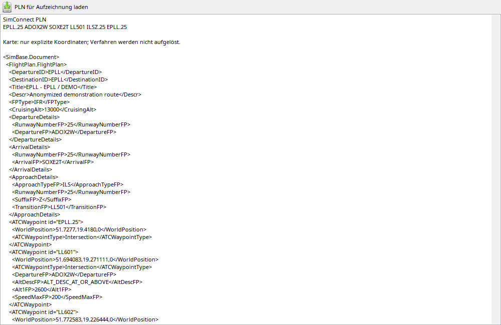

Planlesen und Navigation auflösen sind getrennt. EFB liefert zuerst Flughäfen und Verfahrensnamen; Facility-Abfragen ergänzen gespeicherte Geometrie und Einschränkungen. ADOX2W allein enthält keine vollständigen Koordinaten. SimBrief kann namenlose Punkte zuordnen, fehlende Einschränkungen werden nicht erfunden. Aufgelöste Routen funktionieren offline.
Die Seite zeigt den gespeicherten Plan, keinen FMS-Editor.
| Option / Aktion | Verhalten und Einschränkungen |
|---|---|
| Erfassung | Nach Flugbeginn EFB/SimConnect lesen, Facility-Daten für Verfahrensbeine/Positionen auflösen und speichern. |
| Flughäfen | Abflug/Ziel können vor Motorstart bekannt sein. UNKNOWN bedeutet fehlende oder noch nicht aufgelöste historische Daten. |
| PLN-Import | PLN zuweisen und Flughäfen/Quelle prüfen, bevor die Kartenebene interpretiert wird. |
| Beschränkungen | Geschwindigkeit/Höhe/Position/Rolle nur soweit vorhanden; der Plan belegt keine ATC-Freigabe. |
| Offline | Gespeicherte Snapshots brauchen keine neue Simulatorabfrage. Alte Texte/Punkte lassen Verfahren nicht immer vollständig rekonstruieren. |
